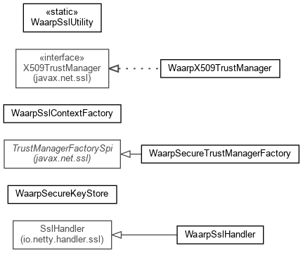

Package org.waarp.common.crypto.ssl
Classes implementing SSL support for Netty
To generate the stores for Waarp for instance, you need to create 2 JKS keyStore.
See:
Description

Package org.waarp.common.crypto.ssl Description
Classes implementing SSL support for Netty
To generate the stores for Waarp for instance, you need to create 2 JKS keyStore. To generate
those files, you can use the "keytool" command from the JDK or using the free tool KeyTool IUI
(last known version in 2.4.1).
See Certificate-Howto.txt file
Usage:
In order to use the SSL support, here are the different steps.
On Client side:
- Create the KeyStore for the Client
For no client authentication:
ggSecureKeyStore = new WaarpSecureKeyStore(keyStorePasswd, keyPasswd);
For client authentication:
ggSecureKeyStore = new WaarpSecureKeyStore(keyStoreFilename, keyStorePasswd, keyPasswd);
- Create the TrustStore for the Client
For Trusting everyone:
ggSecureKeyStore.initEmptyTrustStore(keyTrustStorePasswd);
For Trusting only known Certificates:
ggSecureKeyStore.initTrustStore(keyTrustStoreFilename, keyTrustStorePasswd, needClientAuthent);
Note: needClientAuthent is True if the TrustStore is used to authenticate Clients, False if only
to authenticate Servers
- Create the WaarpSslContextFactory:
WaarpSslContextFactory ggSslContextFactory = new WaarpSslContextFactory(ggSecureKeyStore,
false);
- Create your own PipelineFactory:
As first item in the pipeline, add:
pipeline.addLast("ssl", ggSslContextFactory.initPipelineFactory(false,
ggSslContextFactory.hasTrustStore(), executor));
where executor is generally a Executors.newCachedThreadPool();
For example, see Waarp Local Exec module using SSL:
localExecClientPipelineFactory = new LocalExecSslClientPipelineFactory(ggSslContextFactory);
bootstrap.setPipelineFactory(localExecClientPipelineFactory);
- In the final Handler, you need to add the handshake:
public void channelConnected(ChannelHandlerContext ctx, ChannelStateEvent e)
throws Exception {
...
SslHandler sslHandler = ctx.getPipeline().get(SslHandler.class);
// Begin handshake
ChannelFuture handshakeFuture = sslHandler.handshake();
handshakeFuture.addListener(new ChannelFutureListener() {
public void operationComplete(ChannelFuture future)
throws Exception {
if (future.isSuccess()) {
//OK
} else {
future.getChannel().close();
}
}
});
}
- At the end of your connection, you need to release the Executor passes as argument to
ggSslContextFactory.initPipelineFactory
On Server side:
- Create the KeyStore for the Server
ggSecureKeyStore = new WaarpSecureKeyStore(keyStoreFilename, keyStorePasswd, keyPasswd);
- Create the TrustStore for the Client
For Trusting everyone:
ggSecureKeyStore.initEmptyTrustStore(keyTrustStorePasswd);
For Trusting only known Certificates:
ggSecureKeyStore.initTrustStore(keyTrustStoreFilename, keyTrustStorePasswd, needClientAuthent);
Note: needClientAuthent is True if the TrustStore is used to authenticate Clients, False if only
to authenticate Servers
-
- Create the WaarpSslContextFactory:
WaarpSslContextFactory ggSslContextFactory = new WaarpSslContextFactory(ggSecureKeyStore,
true);
- Create your own PipelineFactory:
As first item in the pipeline, add:
pipeline.addLast("ssl", ggSslContextFactory.initPipelineFactory(true,
ggSslContextFactory.hasTrustStore(), executor));
where executor is generally a Executors.newCachedThreadPool();
For example, see Waarp Local Exec module using SSL:
bootstrap.setPipelineFactory(new LocalExecSslServerPipelineFactory(ggSslContextFactory, delay));
- In the final Handler, you need to add the handshake:
public void channelConnected(ChannelHandlerContext ctx, ChannelStateEvent e)
throws Exception {
...
SslHandler sslHandler = ctx.getPipeline().get(SslHandler.class);
// Begin handshake
ChannelFuture handshakeFuture = sslHandler.handshake();
handshakeFuture.addListener(new ChannelFutureListener() {
public void operationComplete(ChannelFuture future)
throws Exception {
if (future.isSuccess()) {
//OK
} else {
future.getChannel().close();
}
}
});
}
- At the end of your connection, you need to release the Executor passes as argument to
ggSslContextFactory.initPipelineFactory
Copyright © 2009-2013 Waarp. All Rights Reserved.